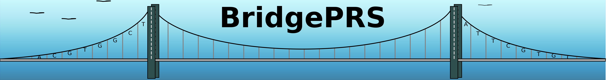
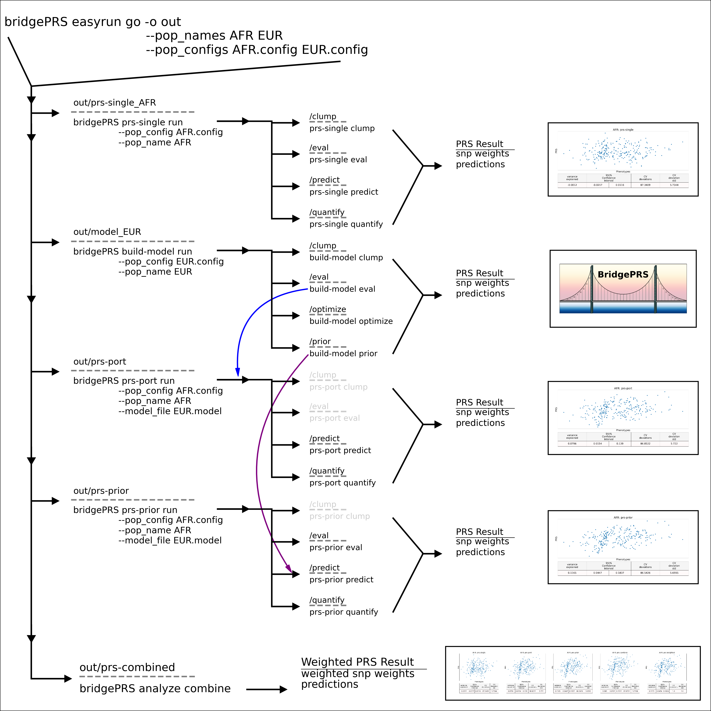

Subprograms
BridgePRS consists of five related multi-function subprograms:
1) BridgePRS prs-single
2) BridgePRS build-model
3) BridgePRS prs-port
4) BridgePRS prs-prior
5) BridgePRS analyze combine
| Subprogram | Input | Subcommands | Output |
|---|---|---|---|
| prs-single | Primary Pop Data | clump,eval,test,predict | prs-result |
| build-model | Model Pop Data | clump,eval,test,prior | model-params |
| prs-port | Primary Pop + Model Result | port,predict | prs-result |
| prs-prior | Primary Pop + Model Result | inform,test,predict | prs-result |
| analyze | PRS Result Files | combine,plot | weighted prs-result |
These programs can be called consecutively using the easyrun master-program which will create the following directory structure:
